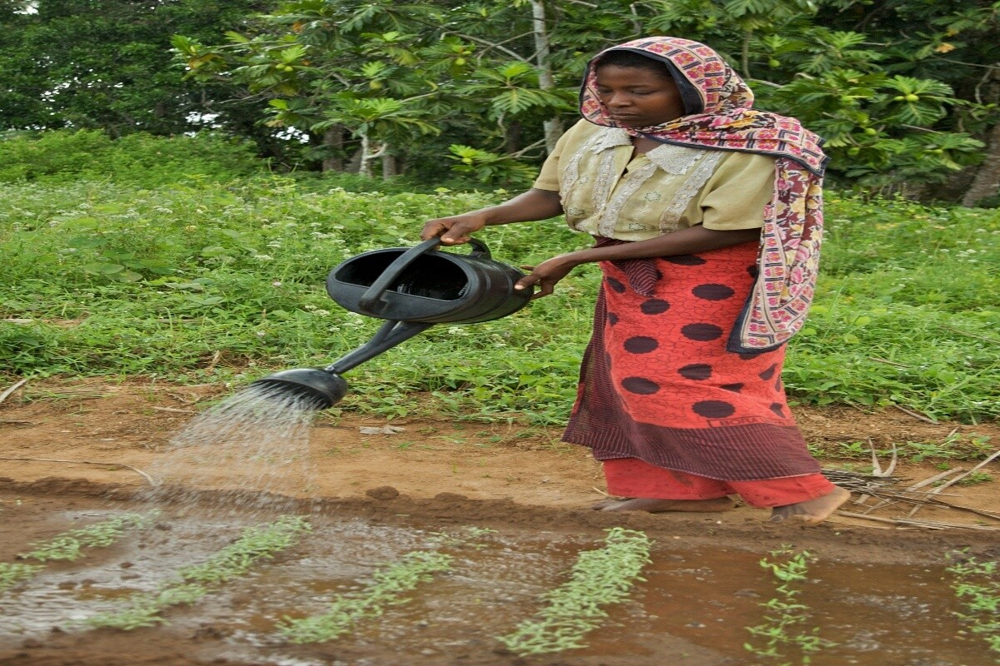
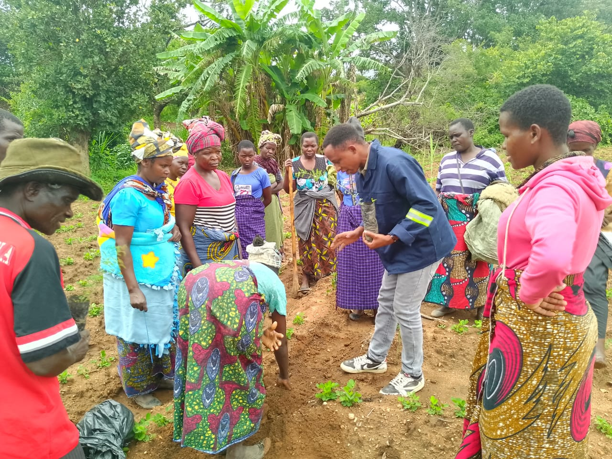
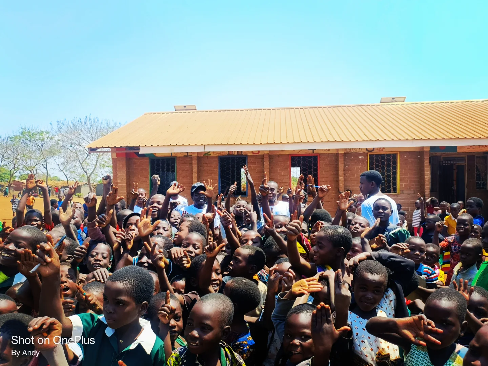
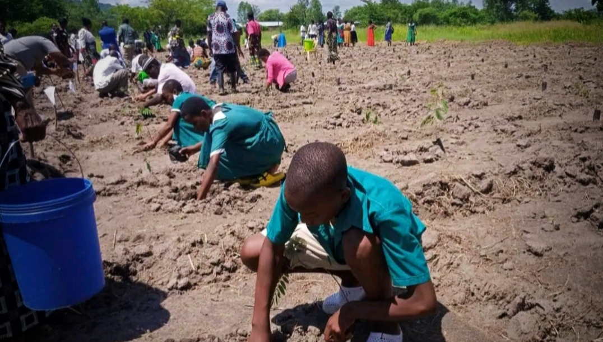

Our Work in Pictures
Documented Change on the Ground

☀️Solar Irrigation
WASH ProgramWomen in Irrigation
WASH Program
🌾Climate-Smart Farming
Agriculture ProgramClimate-Smart Farming
Agriculture Program
Clean Water Access
WASH Program
Community Engagement
All Programs
🌟Youth Empowerment
Agriculture & Gender ProgramYouth Empowerment
Quality education & Gender Program
🌳